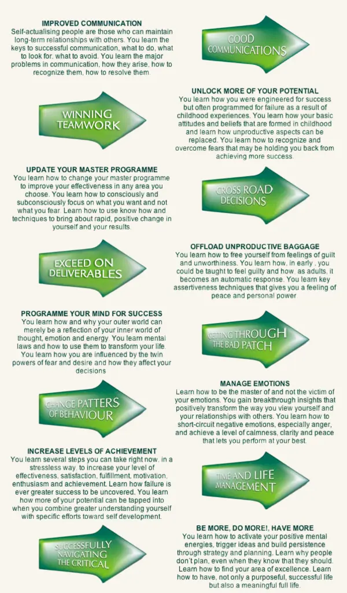
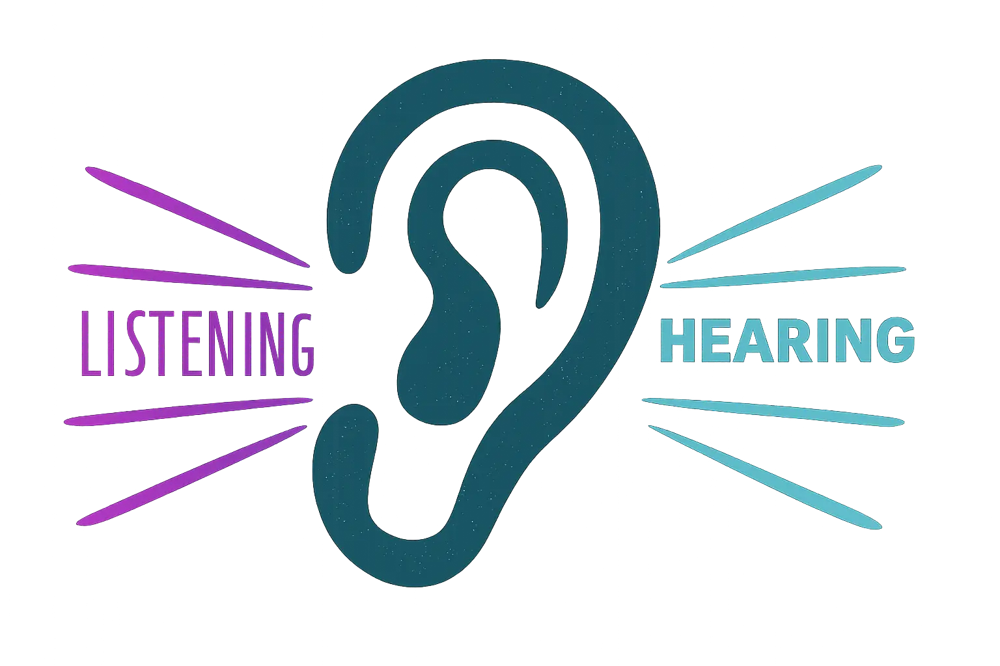
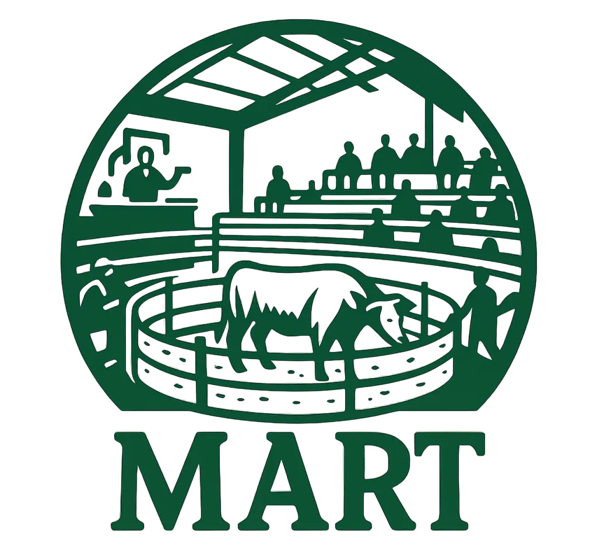
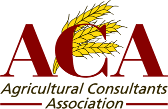
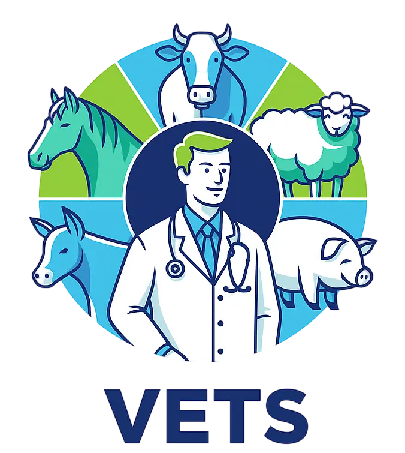
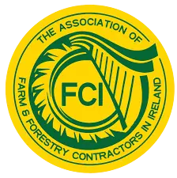

“Before you can master your life, you must master your thinking and attitude”
THE MAXIMUM ACHIEVEMENT TRAINING PROGRAMME is a toolkit for life on how to tap into your abilities and capacities by mastering your thinking, attitude and behaviour, if applied it will deliver success for a lifetime.

Keepfarmingon, which evolved from Century Management and later Millennium Management
International, national firms of professional development and management training consultants which where
distinguished for their collaborative approach.
Keepfarmingon has a particular focus on and unique understanding of family farm issues.
Renowned for our collaborative approach: base on open LISTENING to customers/patrons, by
understanding in
depth both the psychology of individuals and the evolving culture of the industry.
For decades, our mission has been to enable people, businesses, and farms to realize their FULL AND UNIQUE POTENTIAL, and to achieve ongoing fulfillment and lasting success. Now, Keepfarmingon particularly focus on family farm businesses.





Our approach views family farm intergenerational renewal not simply as a land-based transactional outcome, but as a transitional process. Years before the transfer, family members can engage in co-creation and contribute innovative ideas to make the family farm more sustainable and successful. This process allows the voices of the younger generation to be heard and helps unlock the full potential of family farm generational renewal, ensuring base for for all as each person adapts to their new role.
LISTENING also means continuously seeking out up to date information and engaging with those who are “in the know”: Teagasc, Vets, ACA, Marts, GPs, FCI, Charter Accountants, Farmer Journal, Farm Exam, Farm Independent, Agriland.ie, Farmers Guardian, Farmers Weekly, FarmWeek.